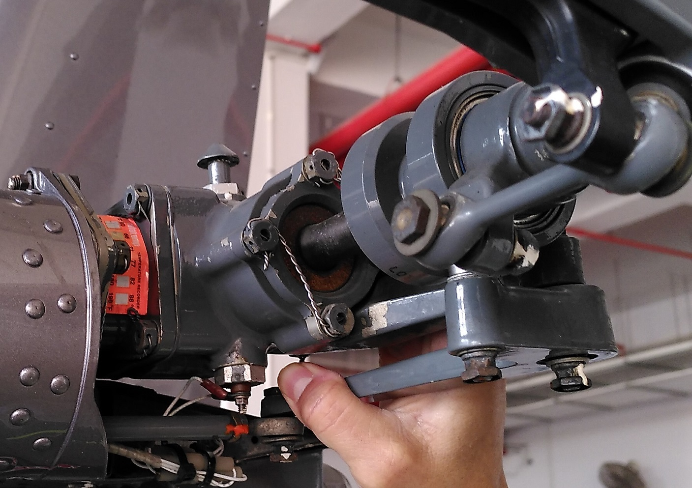

Private leisure helicopter flights operating in Singapore are a rare occurrence compared to planes. So when a helicopter ride opportunity presented itself to me recently, I immediately said YES!
The machine is a privately-owned Robinson R22 Beta II manufactured in 2004 registered as N783SH. It’s a 2-seat light helicopter that is commonly used for primary flight training.
While doing the preflight checks, the helicopter pilot of my ride said and I quote.
Most people only see the glamorous part of the pilot at the cockpit, not the pre and post flight safety checks and preparatory parts of the work.
(Joanne, helicopter pilot for my flight)
As a private pilot myself but with a plane license, I totally agree with this. The amount of preparation work before and after the flight is usually not captured by most photos and videos and thus unaware to most outside the aviation community.
Therefore when I decided to write this blog post to share this one-of-a-kind local flight experience, I felt it was just as important to highlight the non-flying portions behind the scenes as well.
Flight video
This is the video of the entire flight if you wish to jump right in.
Here are the timestamps of key moments:
- 00:00 - Cranked the engine waiting for engine to heat up.
- 00:45 - Doing the runup
- 04:40 - Starting taxi.
- 13:11 - Entering the runway.
- 18:40 - Short Final at a very slow speed only possible for a helicopter.
- 19:10 - Third-person video of second takeoff.
- 22:52 - On last final.
- 29:33 - Turning to ES. Third-person video of approaching parking bay.
- 31:05 - Touch down! Slowly idling engine and waiting for it to cool down.
- 31:48 - Pulling the mixture to idle cut-off. Main rotor slowly spins down.
The noise generated in the cockpit is very loud as we are directly underneath the main rotor. I feel an active noise cancellation headset is pretty much mandatory for people in a helicopter cockpit. For this video, I actually had to lower the volume of the audio track in order to not blast your earphones or speakers.
Preflight
Before commencing every flight, the pilot-in-command has to do some checks to ensure the aircraft is in good shape.
Joanne inspects the main rotor hub and rotating the main rotor to ensure all is well.
One should climb up from the designated site only or use a step up ladder to check and clean the main rotor blades before the flight. To access the blades if we do not have a ladder, we should use the “push up” one blade to lower the opposite one technique. We should not pull down the blades.
The main rotor hub is a pretty complex assembly. One has to ensure everything is locked, no cracks and leaks.
A orange temperature recorder sticker on the tail rotor drive shaft assembly notes the highest temperature that was encountered during operation. Too hot means no good.
The engine is a 4-cylinder Lycoming O-360-J2A with 145 HP. This is derated to 131HP for take off and 124HP for continuous to prolong engine life. This class of piston engines is also commonly used on airplanes such as the Cessna 172 as well.
Preflight checks are similar in this area to planes, sump the fuel for contaminants, check engine oil, no debris in oil cooler, no leaks etc.
I initially didn’t know what this is. Apparently it’s the Direct Drive squirrel-cage blower. Make sure there are no cracks.
It may be prudent to program the avionics in the comfort of the hangar instead of at the scorching park bay or in the air. Here, the VFR transponder code, communication and VOR frequencies are set in.
Flying a helicopter demands the constant use of all the pilot’s limbs hence it may not be feasible to easily set the frequencies later.
The ground handling wheels at the skids are currently unlocked to prevent unnecessary loads on them when they are not needed. They will be locked later before towing and removed before the flight.
Notice also the doors are removed. In fact, the doors were not there for the entire flight! This allows air circulation in the cockpit especially in the hot Singapore weather.
This is just a very small subset of the preflight checks. It is much more compared to a plane of similar size given the more numerous moving parts a helicopter has.
Heading to the parking bay
The helicopter does not magically end up at the airport parking bay. It has to be towed there from the hangar.
A tow vehicle tows the helicopter into the airport.
I had the “honour” of being the tail walker during entire time the heli was being towed to the parking bay. This is to supposedly to prevent the heli’s tail from smacking into anything.
The heli finally reached the parking bay. Notice that ground handling wheels are now removed from the skids at this point.
Actual flight
Here Joanne is doing a hover taxi of the chopper from the parking bay to the runway.
Hovering a helicopter is a mentally-taxing activity. Taxing on the taxiway is relatively relaxing for a plane pilot as it’s pretty much like driving a car. But for a heli pilot, it’s constant action on the controls from the moment of lift-off onwards.
The pilot-in-command (PIC) of a helicopter usually sits on the right seat. This is opposite for a plane where the PIC usually takes the left seat. As to why, take a look at this link.
At Seletar Airport, the helicopter is required to taxi from its parking bay to the runway via the taxiways like a wheeled-equipped plane. Although one would intuitively expect that the helicopter lift off from and land directly back at its parking bay, this is occasionally practiced at other airports just not at Seletar Airport.
At Runway 21 hovering and waiting to takeoff like a plane. A plane pilot usually can relax a bit if the plane is stationery. Not so for a heli pilot.
What surprised me is that the helicopter does a takeoff like a plane to gain speed before climbing. A quick google gave me this link which listed some reasons like gaining enough speed to allow safe autorotation on engine failure and obstacle avoidance.
This is the upwind leg just after takeoff from the runway. The bubble canopy of the heli offers breathtaking views. On a plane, this view is obstructed by the large instrument panel.
At Seletar, the traffic pattern altitude of the helicopter is typically at 600 feet above ground level (AGL) compared to GA planes of 800 feet. (1000 feet AGL typical for planes at most other GA airfields)
The pattern direction is also at the opposite side of the runway to avoid clashing with planes. Here for runway 21, the helicopter flies a left pattern compared to right pattern for planes. The pattern appears to be smaller as well as the downwind leg is 0.5 NM away from the runway compared to planes which is usually 1.0 NM.
This is actually my first time in a pattern on this side of the runway.
Try to spot the plane we are avoiding while we are on late downwind.
In short final for the last landing.
The extremely low approach speed of only 20+ knots initially gave me a queasy feeling as that would be unthinkable for a plane whose sight picture I was used to. A plane would have long stalled out at that speed.
When we exited the runway, we vacated by the first taxiway E1 at the start of the runway. That was mindblowing as all planes need a certain minimum runway length to stop safely hence it will usually be at least the second taxiway.

A marshaller has to be present to guide the pilot to the right spot.
After this, the process is reversed. Ground Handling wheels are attached back to the skids and the heli is towed back to the hangar.
Concluding Remarks
The General Aviation scene in Singapore is pretty limited. Seletar Airport is the only GA airport here and GA plane pilots who do leisure flying are uncommon. Helicopter pilots are an even rarer breed. It was truly an honour to have met one and be part of a flight as well.
Therefore, I’m really thankful to have the opportunity to fly in a heli in Singapore that few people will ever get to experience. With this post, I hope more people will be aware that private helicopter flights are indeed possible here as well.
After this flight, I have a greater appreciation of heli pilots. Helicopters are so much harder to fly than a plane. The heli pilot has to be constantly on the ball on this unstable machine unlike most planes which will keep flying safely even if the pilot is not doing anything for a while.
As a famous quote says,
Helicopters don’t fly, they beat the air into submission
This heli flight experience in many sense reminded me of my first flight experience in a light plane in 2017. That flight would inspire me to get my plane PPL. Due to many factors, I cannot say with certainty I will get a helicopter licence in future, however at the very least, it has planted the seeds of this possibility in me.


{kind=link}
{kind=link}
{kind=link}
{kind=link}
{kind=link}
{kind=link}
{kind=link}
{kind=link}
{kind=link}
{kind=link}
{kind=link}
{kind=link}
{kind=link}
{kind=link}
{kind=link}
{kind=link}
{kind=link}
{kind=link}
{kind=link}